- I.
Allgemeines
- 1.
Schiffahrtszeichen
Schiffahrtszeichen zur Bezeichnung der Wasserstraße, der Fahrrinne und von gefährlichen Stellen und Hindernissen werden auf dem Rhein nicht durchgehend gesetzt.
Schwimmende Schiffahrtszeichen werden etwa 5,00 m außerhalb der durch sie bezeichneten Begrenzungen verankert.
Buhnen und Parallelwerke können durch schwimmende oder feste Schiffahrtszeichen bezeichnet sein. Diese sind im allgemeinen vor oder auf den Buhnenköpfen und Parallelwerken angebracht.
Von den Zeichen muß ein ausreichender Abstand gehalten werden, da sonst Gefahr besteht, zu raken oder aufzulaufen.
- 2.
Begriffe
| Fahrrinne: | Teil der Wasserstraße, in dem für die durchgehende Schifffahrt bestimmte Breiten und Tiefen vorhanden sind, deren Erhaltung angestrebt wird. |
| Fahrwasser: | Teil der Wasserstraße, der den örtlichen Umständen nach von der durchgehenden Schifffahrt benutzt wird. |
| Rechte Seite/linke Seite: | Die Bezeichnung „rechte Seite“ und „linke Seite“ der Wasserstraße/der Fahrrinne bezieht sich auf die Richtung „Talfahrt“. |
| Feuer: | Licht mit Kennung, das der Befeuerung dient. |
| Festfeuer: | Ununterbrochene Lichterscheinung von gleichbleibender Stärke und Farbe. |
| Taktfeuer: | Unterbrochene Lichterscheinung von gleichbleibender Stärke und Farbe. |
| | Es werden verwendet |
| | - –
ununterbrochenes Feuer mit Einzelunterbrechung 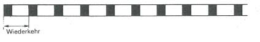 oder mit Gruppen von Unterbrechungen Beispiel: 2 Unterbrechungen 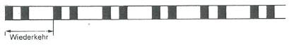 - –
Gleichtaktfeuer 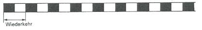 - –
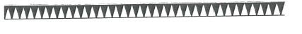
|
- II.
Bezeichnung der Fahrrinne
- 1.
Rechte Seite
| 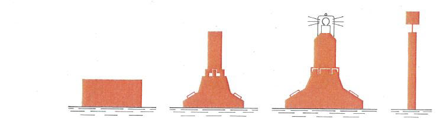 |
| Farbe: rot | Bild 1 |
| Form: Stumpftonne (auch Leuchttonne), Schwimmstange | |
| Toppzeichen (wenn vorhanden): roter Zylinder | |
Feuer (wenn vorhanden): rotes Taktfeuer
(in der Regel mit Radarreflektor) | |
- 2.
Linke Seite
| 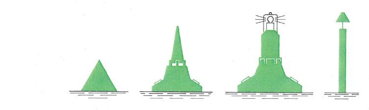 |
| Farbe: grün | Bild 2 |
| Form: Spitztonne (auch Leuchttonne), Schwimmstange | |
| Toppzeichen (wenn vorhanden): grüner Kegel – Spitze oben – | |
Feuer (wenn vorhanden): grünes Taktfeuer
(in der Regel mit Radarreflektor) | |
- 3.
Spaltung
| 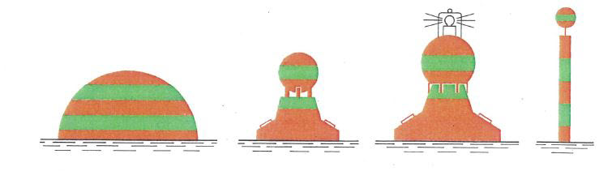 |
| Farbe: rot-grün waagerecht gestreift | Bild 3 |
| Form: Kugeltonne (auch Leuchttonne), Schwimmstange | |
| Toppzeichen (wenn vorhanden): rot-grün waagerecht gestreifter Ball | |
Feuer (wenn vorhanden): weißes Funkel- oder Gleichtaktfeuer
(in der Regel mit Radarreflektor) | |
- 4.
Zusammenspiel der Bilder 1 bis 3 (Beispiel)
- III.
Bezeichnung der Wasserstraße sowie von Hindernissen in oder an der Wasserstraße
- A.
Feste Zeichen
- 1.
Rechte Seite
| Farbe: rot | 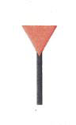 | |
| Form: Stange mit Toppzeichen | |
| Toppzeichen: roter Kegel – Spitze unten – | |
| Feuer (wenn vorhanden): rotes Taktfeuer | Bild 5 |
| | | |
- 2.
Linke Seite
| Farbe: grün | 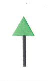 | |
| Form: Stange mit Toppzeichen | |
| Toppzeichen: grüner Kegel – Spitze oben – | |
| Feuer (wenn vorhanden): grünes Taktfeuer | Bild 6 |
| | | |
- 3.
Spaltung
| Farbe: rot-grün | | |
| Form: Stange mit Toppzeichen | | |
Toppzeichen: roter Kegel – Spitze unten –
über grünem Kegel – Spitze oben – | 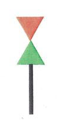 | |
| | | Bild 7 |
| | | |
- 4.
Abzweigung, Einmündung, Hafeneinfahrt
Im Bereich von Abzweigungen, Einmündungen und Hafeneinfahrten kann für jede Seite der Wasserstraße die Ufersicherung bis zur Trennspitze durch die unter den Nummern 1 und 2 (Bilder 5 und 6) gezeigten festen Schiffahrtszeichen gekennzeichnet werden. Die Fahrt von der Hafeneinfahrt in den Hafen gilt als Bergfahrt.
- B.
Schwimmende Zeichen
- 1.
Rechte Seite
| 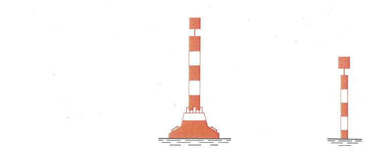 |
| Farbe: rot-weiß waagerecht gestreift | | Bild 8 |
| Form: Spierentonne (auch Leuchttonne), Schwimmstange |
| Toppzeichen: roter Zylinder | | |
Feuer (wenn vorhanden): rotes Taktfeuer
(in der Regel mit Radarreflektor) | | |
| | | |
- 2.
Linke Seite
| 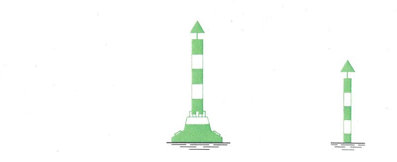 |
| Farbe: grün-weiß gestreift | | Bild 9 |
| Form: Spierentonne (auch Leuchttonne), Schwimmstange |
| Toppzeichen: grüner Kegel – Spitze oben – | | |
Feuer (wenn vorhanden): grünes Taktfeuer
(in der Regel mit Radarreflektor) | | |
| | | |
- C.
Zusammenspiel der Bilder 5 bis 9 im Bereich von Abzweigungen, Einmündungen und Hafeneinfahrten
- IV.
Weitere Möglichkeiten zur Bezeichnung von gefährlichen Stellen und Hindernissen in der Wasserstraße
- 1.
Vorbeifahrt ohne Herabsetzung der Geschwindigkeit auf der freien Seite zugelassen
| bei Nacht | bei Tag |
| gesperrte Seite | gesperrte Seite |
| | Verbotszeichen A.1 |
| 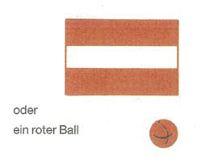 |
| freie Seite | freie Seite |
| | Hinweiszeichen E.1 |
| 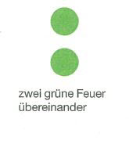 | 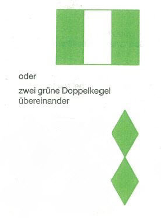 |
| | Bild 11 |
| bei Nacht | bei Tag |
| gesperrte Seite | gesperrte Seite |
| Beispiele | |
| 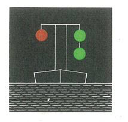 | 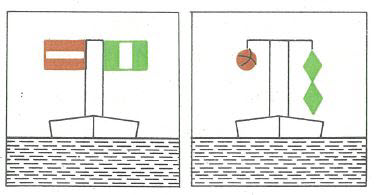 |
| | Bild 12 |
- 2.
Vorbeifahrt nur mit Herabsetzung der Geschwindigkeit auf der freien Seite zugelassen
(Wellenschlag vermeiden)
| bei Nacht | bei Tag |
| gesperrte Seite | gesperrte Seite |
| 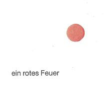 | 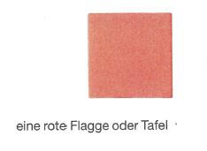 |
| freie Seite | freie Seite |
| 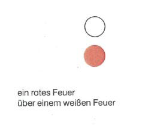 | 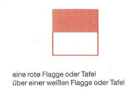 |
| | Bild 13 |
| | |
| bei Nacht | bei Tag |
| Beispiele | |
| 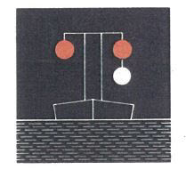 | 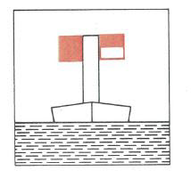 |
| | Bild 14 |
- V.
Zusätzliche Zeichen für die Radarschiffahrt
- A.
Bezeichnung von Brückenpfeilern (falls erforderlich)
- 1.
Gelbe Tonnen mit Radarreflektoren
(oberhalb und unterhalb der Brückenpfeiler ausgelegt)
- 2.
Stange mit Radarreflektor
(oberhalb und unterhalb der Brückenpfeiler)
- B.
Kennzeichnung von Freileitungen (falls erforderlich)
- 1.
Radarreflektoren an Freileitung befestigt
(ergeben im Radarbild eine Punktreihe zur Identifizierung der Freileitung)
- 2.
Radarreflektoren auf gelben Tonnen an beiden Ufern paarweise ausgelegt
(ergeben im Radarbild je zwei nebeneinanderliegende Punkte zur Identifizierung der Freileitung)